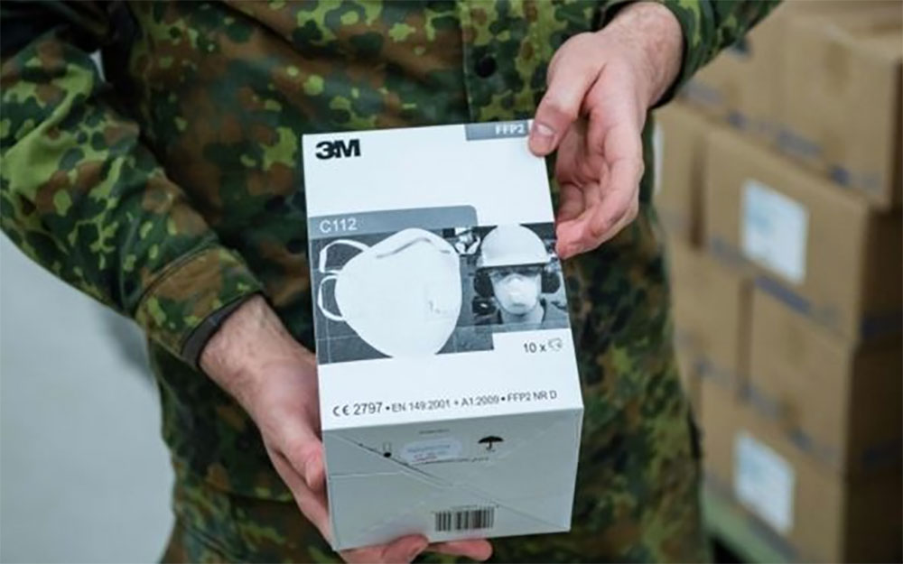
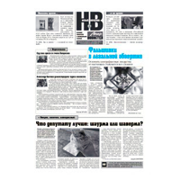

«Методы Дикого Запада»
Как США отнимают маски у союзников

Германия стала уже третьей страной, обвиняющей США в перехвате поставок медицинских защитных масок.На прошлой неделе аналогичные обвинения выдвинули во Франции и Канаде.И хотя прямых доказательств, подтверждающих вину Вашингтона, нет, во многом подозрения основаны на привычной для мировых лидеров политике Дональда Трампа, основанной на лозунге «Америка прежде всего».
Нехватка медицинского оборудования и защитных масок стала поводом для новых противоречий в отношениях стран.Берлинские власти обвиняют США в «пиратстве» после того, как в столицу Германии так и не поступили заказанные и оплаченные 200 тыс.масок FFP2 американского производства.
Маски были заказаны в Азии, однако, по словам пресс-секретаря Министерства внутренних дел Берлина Мартина Паллагена, в последний момент контейнеры были перенаправлены в США.
«Действия президента США не просто передают недостаток солидарности, они бесчеловечны и безответственны», — возмущался в своем Twitter мэр Берлина Майкл Мюллер.
О том, что в Бангкоке маски были направлены обратно в США заявил и глава Управления внутренних дел Берлина Андреас Гизель.Происходящее он назвал «актом современного пиратства».
«С трансатлантическими партнерами так не поступают, — сказал он берлинской ежедневной газете Tagesspiegel в пятницу, — даже во времена глобальных кризисов нельзя применять методы Дикого Запада».
Подозрения берлинских чиновников основаны на информации неназванного поставщика.Вашингтон отрицает обвинения, однако даже канцлер Германии Ангела Меркель не стала занимать позицию США.
«Для меня важно, чтобы мы дошли до сути, — сказала она в ходе пресс-конференции.— У нас есть противоречивые заявления, но я думаю, что это должно быть проясниться».
При этом доказательств того, что США действительно конфисковали маски в Таиланде, пока нет.
Американские чиновники сообщили Politico, что у них нет никакой информации о подобном инциденте и участии в нем США.Они также отметили, что сейчас в каждой стране существует нехватка защитного снаряжения, что создает интенсивную конкуренцию между государствами.
В то же время, подозрения берлинских чиновников лишь усилились на фоне недавнего заявления президента США Дональда Трампа, что американские компании должны увеличить поставки медицинских товаров «для внутреннего потребления».Он также сообщил, что правительство получило около 200 тыс.респираторов, 130 тыс.хирургических масок и 600 тыс.перчаток.Однако источник получения американский лидер не стал указывать.
Подозрения Берлина также основываются на политике Трампа, которая опирается на его непреклонный лозунг «Америка прежде всего».И в рамках расставленных президентом США приоритетов подобный инцидент выглядит логичным.Для лидеров Евросоюза глава Белого дома уже не в первый раз выглядит как ненадежный союзник.
К тому же немцы все еще раздражены возможными попытками США перехватить права на разработку вакцины от коронавируса.В марте Welt am Sonntag сообщил, что Вашингтон пытается переманить германскую компанию CureVac, которая занимается разработкой вакцины, чтобы получить эксклюзивные права.Информация не была подтверждена официальными лицами, однако 16 марта, после публикации этой истории, глава Еврокомиссии Урсула фон дер Ляйен заявила, что «Евросоюз изначально финансировал разработки CureVac и теперь будет финансировать их снова».
В Канаде тем временем также зреет недовольство возможными действиями Вашингтона.
Ранее компания ЗМ, производящая маски, сообщила, что правительство США запретило ей поставлять маски в Канаду и страны Латинской Америки.Глава Белого дома сослался на закон, по которому американской компании можно запретить экспортировать медицинскую продукцию в другие страны.Большую часть продукции ЗМ производит в Азии.
«Это напоминает мне о том, что произошло в 1939 и 1940 годах, когда Канада участвовала в борьбе с глобальным фашизмом, — Соединенные Штаты просидели первые два или три года и фактически изначально отказались даже от поставок в Канаду и Соединенное Королевство, которые вели бой в то время», — сказал премьер-министр канадской Альберты Джейсон Келли.
Также СМИ распространили информацию, что партия масок, предназначавшаяся для страны, была перехвачена и перенаправлена в США.
В пятницу премьер-министр Канады Джастин Трюдо выразил обеспокоенность появившимися сообщениями и поручил министру общественной безопасности и министру транспорта изучить всю информацию по этому поводу, чтобы убедиться, что заказанная продукция прибудет по назначению.
По словам канадского премьера, он постоянно контактирует с США и следит за этим вопросом.Трюдо также сообщил, что понимает, насколько высока потребность в защитном оборудовании в США, однако Канада также нуждается в медицинской продукции.
На прошлой неделе те же обвинения прозвучали от французских политиков.
Глава регионального совета Иль-де-Франс Валери Пекрессе обвинила американцев в том, что они перекупили партию масок, заказанную Францией.«Мы уступили заказ американцам, они перебили у нас поставку, которую мы выстроили», — сказала Валери Пекресс.
Она также сообщила, что, хотя Франция уже договорилась об оплате, «американцы платят наличными» вперед.США «просто хотят заниматься бизнесом», пока весь мир переживает бедственное положение, сказала Валери Пекресс телекомпании LCI.
Аналогичное обвинение было выдвинуто лидером региона Гранд-Эст Жаном Роттнером.В четверг, по его словам, самолет с масками китайского производства, был перекуплен американцами.
«Мы работаем круглосуточно, чтобы обеспечить доставку этих масок, — сообщил Роттнер.— Американцы платят в три или четыре раза больше, чем мы, и наличными».
Однако высокопоставленный представитель администрации США отклонил подобные обвинения в разговоре с французской прессой: «Правительство Соединенных Штатов не приобретало никаких масок, предназначенных для поставки из Китая во Францию.Сообщения об обратном полностью ложны».
Примечательно также, что еще на прошлой неделе Дональд Трамп заявил, что Центры по контролю над распространением коронавируса будут рекомендовать всем американцам носить защитные маски.При этом, согласно рекомендациям ВОЗ, повсеместное использование масок неоправданно, так как они не могут полностью защитить от заболевания.
Анна Юранец
По материалам: «Газета.ру»
Posted On: 2020-04-07T21:00:00

Content Date: 2020-04-07
Download Date: 2021-12-24
Document ID: L0C04CRTT